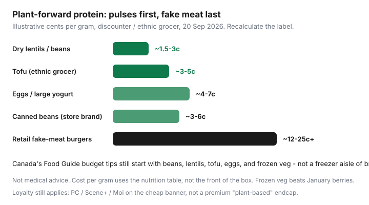

Food & Groceries · Canada
Vegetarian on a Canadian grocery budget: protein without the meat aisle markup
Plant-based eaters still overspend in Canadian aisles by treating “vegetarian” as a branded freezer section: imported out-of-season produce, retail fake-meat burgers, and oat drinks in café sizes. Canada’s Food Guide budget pages and the actual cheap protein list agree instead: beans, lentils, tofu, eggs, dairy if you eat it, frozen vegetables, and spices from grocers that sell them as commodities.
This is a discounter-plus-ethnic-grocer protein strategy, not a medical diet and not a vegan ethics essay. Cost per gram, a 7-day Maxi / No Frills / Super C shaped plan, fake-meat as an optional treat, and loyalty that still applies on the cheap banner. If you eat eggs and yogurt, this page still counts you. If you do not, skip those rows and double the pulses.
Disclosure: No natural grocery-brand affiliate. Meal-kit plant-based trials are an optional backup for brutal weeks, not the weekly system. Saving Optimizer may earn a commission if we later add kit or portal links. We do not currently claim those partnerships. This is not nutrition advice; talk to a dietitian for clinical needs.
Key takeaways
- Rank protein by price ÷ grams on the nutrition table. Dry lentils and tofu from an ethnic grocer usually crush retail fake meat.
- Ethnic grocers are often the pulse, tofu, and spice discounter in Vancouver, Calgary, Toronto, and Montreal.
- Frozen vegetables beat January berries and wilted ‘salad kits’ on both price and waste.
- Fake-meat burgers can cost several times the cents-per-gram of eggs or dal — budget them as a treat if you like them.
- PC Optimum, Scene+, and Moi still apply at discounters. You do not need a premium ‘plant-based’ banner.
Cost per protein gram: beans, lentils, tofu, dairy, eggs
Same formula as the omnivore cost-per-gram guide: package price divided by grams of protein in the package. Recalculate when eggs spike. September 2026 discounter snapshots often showed large eggs around $3.49–$3.99 a dozen — still usually cheaper per gram than a branded veggie burger box.

| Food | Why it usually wins | Watch-outs |
|---|---|---|
| Dry lentils / chickpeas | Cheapest grams; store-brand bags | Need a grain and a fat so it is a meal |
| Tofu (ethnic grocer) | Predictable protein; often far below banner tofu | Water-pack weight; press if you hate soggy stir-fries |
| Eggs | ~6 g each; fast | Avian-flu spikes; skip if you do not eat them |
| Plain yogurt / cottage cheese (large tub) | Breakfast and sauces | Single-serve cups wreck unit price |
| Canned beans (house brand) | No soak; lunch emergency | Sodium; rinse. Still usually cheap grams |
| Retail fake-meat | Convenience and familiarity | Often 12–25¢+/g in 2026 shelf snapshots — treat aisle |
Ethnic grocer advantages for pulses and spices
20 kg rice, 2 kg toor dal, tofu by the pack, cumin by the bag: this is where vegetarian budgets are won in Canadian cities. Superstore spices in tiny glass jars are a tax. Shop the grocer on a commute, not as a fourth Saturday stop for $3 of cilantro you will wilt.
No PC Optimum at most independents. The shelf is the program. Compare unit prices anyway — a beautiful produce pile can lose to frozen vegetables at No Frills.
Frozen vegetables vs out-of-season fresh
Canada’s Food Guide budget shopping explicitly makes room for frozen and canned produce. January berries at a full-service banner are a luxury. Frozen mixed vegetables, peas, spinach, and mango are the weeknight infrastructure. Fresh cabbage, carrots, onions, and potatoes stay cheap most of the year at discounters — build around those, not imported salad kits.
Waste: limp spinach is how vegetarian households lose the “we eat healthy” premium. Fridge audit before Flipp, same as food-waste systems.
Sample 7-day vegetarian discounter plan
Assumptions, labelled: two adults, Ontario or Quebec discounter (No Frills / Food Basics / Maxi / Super C), cook-at-home, illustrative 2026 flyer-style prices — not a receipt. West: Superstore / FreshCo / Save-On plus an ethnic stop.
| Day | Eat | Notes |
|---|---|---|
| Sun | Red lentil dal, rice, frozen spinach | Cook extra rice and extra dal for the freezer |
| Mon | Tofu cabbage stir-fry, leftover rice | Tofu from the ethnic grocer if you have one |
| Tue | Chickpea pasta or chana, onions, canned tomatoes | Food Basics Tuesday 10% if you qualify — staples |
| Wed | Bean chili, rice, yogurt if you eat it | Freeze two bricks |
| Thu | Use-it-up: fried rice, frittata, or quesadillas | No new protein. Leftover system. |
| Fri | Egg fried rice or tofu bowls | Skip eggs if vegan; double tofu |
| Sat | Flex / leftover bricks / cheap takeout if planned | Fake-meat only if it is in the treat envelope |
Batch the dal and chili on Sunday. That is the freeze-meals guide with meat removed from the shopping list.
Avoiding pricey fake-meat defaults
Like the product? Buy it on flyer, once, as a Friday treat. Do not let it become Tuesday. Cost per gram is the adult conversation; nostalgia is allowed in a budget line named “treat.” Meal-kit plant-based boxes have the same problem as other kits: you are buying labour. Use a trial only if it replaces takeout you would have ordered anyway.
Loyalty offers that still apply
Load PC / Scene+ / Moi on beans, tofu, yogurt, and frozen veg at the discounter you already use. There is no special vegetarian coalition. Price-match identical national tofu if the flyer is real. Flashfood produce and dairy: only if you will eat it in time — surplus fruit is not a personality.
Vegetarian on a Canadian budget is pulses, tofu, frozen veg, and a flyer. The meat aisle markup is optional. So is the fake-meat aisle markup.
Sources & date stamps
- Health Canada, Canada’s Food Guide: meal planning / grocery shopping on a budget (pulses, tofu, eggs, frozen and canned produce).
- Saving Optimizer protein cost-per-gram snapshots (Sep 2026 discounter eggs and sale meats as context for the ranking method).
- PFC grocery comparison threads (community pattern on banner prices).
Frequently asked questions
Is it cheaper to be vegetarian in Canada?
It can be, if protein is pulses, tofu, eggs, and dairy from a discounter or ethnic grocer. It can be more expensive if ‘vegetarian’ means retail fake meat, imported produce, and meal kits. The cart decides, not the identity.
Where is tofu cheapest?
Often at Chinese, Korean, Vietnamese, and other East or Southeast Asian grocers, not at a full-service banner’s tiny tofu SKU. Compare unit price per 100 g. Warehouse club tofu works if you freeze or finish it.
Do I need fake meat for protein?
No. Lentils, beans, tofu, tempeh, eggs, and dairy (if you eat them) cover cheap grams. Fake meat is a convenience treat unless a sale makes the cents-per-gram sane.
Is this vegan?
The framework is vegetarian and works vegan if you drop eggs and dairy and double pulses, tofu, and fortified plant drinks you actually use. Check labels for B12 if you eat fully plant-based — that is health, not a coupon.
Can I still use PC Optimum or Moi?
Yes. Shop the discounter, load offers on house-brand beans and frozen veg. Do not visit a premium banner because it has a larger plant-based endcap.